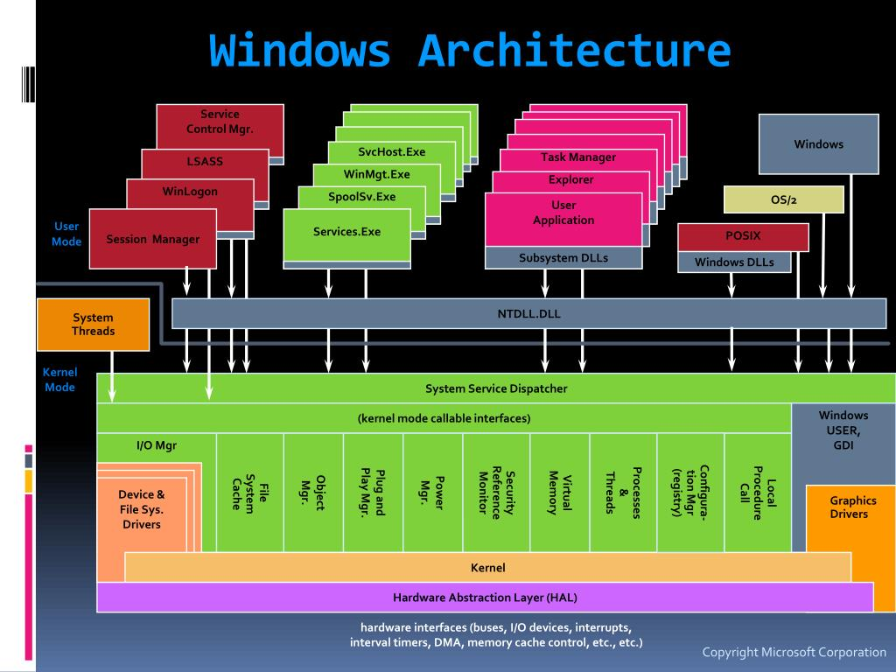

The Windows Kernel: Analyzing Kernel-Mode Driver Code
This chapter discusses the principles and techniques necessary for analyzing kernel-mode driver code, such as rootkits, on the Windows platform. Because drivers interact with the OS through well-defined interfaces, the analytical task can be decomposed into the following general objectives:
- Understand how core OS components are implemented.
- Understand the structure of a driver.
- Understand the user-driver and driver-OS interfaces and how Windows implements them.
- Understand how certain driver software constructs are manifested in binary form.
- Systematically apply knowledge from the previous steps in the general reverse engineering process.
If the process of reverse engineering Windows drivers could be modeled as a discrete task, 90% would be understanding how Windows works and 10% would be understanding assembly code.
Understanding User-Kernel Interfaces
It begins with a discussion of the user-kernel interfaces and their implementation. Next, it discusses linked lists and how they are used in Windows. Then it explains concepts such as threads, processes, memory, interrupts, and how they are used in the kernel and drivers. After that, it goes into the architecture of a kernel-mode driver and the driver kernel programming interface. It concludes by applying these concepts to the reverse engineering of a rootkit.
Analogy: The City and Its Workers
Imagine your computer as a big city, where lots of workers (programs) do their jobs to keep everything running smoothly. There are two types of workers:
- Normal workers doing regular tasks.
- Special workers (drivers) operating deep inside the city’s control center.
Sometimes, there are sneaky workers, called rootkits, who hide and try to mess things up without getting caught. To understand how these sneaky rootkits work, you need to know:
- How the city (computer) is built.
- How the special workers (drivers) do their jobs.
- How the regular workers communicate with the special workers.
- How to analyze the tasks of these workers using assembly code.
Once you grasp this, you can start investigating and figuring out what the rootkit is up to, like a detective in the city!
Windows Fundamentals
We begin with a discussion of core Windows kernel concepts, including fundamental data structures and kernel objects relevant to driver programming and reverse engineering.
Memory Layout
Windows divides the virtual address space into two portions: kernel and user space. On x86 and ARM, the upper 2GB is reserved for the kernel and the bottom 2GB is for user processes.
When a thread in a process is scheduled for execution, the OS changes a processor-specific register to point to the page directory for that process, allowing each process to have its own virtual memory space.
Analogy: The Toy Box
Imagine your computer as a big toy box shared with friends. The top half is for grown-ups (the kernel) and the bottom half for you and your friends (user space). The computer uses special labels (like CR3 or TTBR) to keep track of whose toys (memory) belong to whom.
Processor Initialization
When the kernel boots up, it initializes each processor and sets up structures like the Processor Control Region (PCR) and Processor Region Control Block (PRCB), which hold vital CPU information and state.
Analogy: Robots and Control Panels
Imagine your computer as a team of robots, each with its own control panel (PCR) that keeps track of tasks and performance. The PRCB is a mini control box with specific details about each robot's operations.
System Calls
System calls are how users request services from the kernel. These requests are processed transparently, with the kernel handling permissions and resource management.
Analogy: The Restaurant Kitchen
The OS is the head chef, and system calls are like customer orders. When you want to save a file, the waiter (system call) takes your request to the kitchen (kernel) for processing.
Processor Initialization
When the kernel boots up, it performs basic initialization for each processor. One critical structure involved in this process is the Processor Control Region (PCR). This is a per-processor structure that holds vital CPU information such as the base address of the IDT and the current IRQL. Inside the PCR is the Processor Region Control Block (PRCB), which contains detailed information about the processor, including:
- CPU type and model
- Current and next threads
- Queue of Deferred Procedure Calls (DPCs)
The PCR is always accessible in kernel mode through special registers:
- FS segment for x86
- GS segment for x64
- System coprocessor registers for ARM
Functions like PsGetCurrentProcess and PsGetCurrentThread query the PCR/PRCB to provide the current process and thread information.
Imagine your computer as a team of robots. Each robot has a control panel (PCR) where it tracks important information. Inside this panel, there's a control box (PRCB) with details about the robot's tasks and capabilities.
System Calls
An operating system (OS) manages hardware resources and provides interfaces through system calls, which are typically functions in the kernel servicing I/O requests from users. When you want to save a file, the OS handles requests through system calls that check permissions, access the file system, and manage data transfer to the hard disk.
The OS implements system calls using two key data structures:
- Service Table Descriptor: Holds metadata about supported system calls.
- Arrays of Function Pointers: KeServiceDescriptorTable for standard calls and KeServiceDescriptorTableShadow for GUI-related calls.
These tables help the OS track what actions it can perform for various requests.
Think of the OS as a head chef in a restaurant. When you place an order (system call), the chef checks the menu (service table) and processes your request while ensuring everything is done correctly behind the scenes.
Faults, Traps, and Interrupts
The processor interacts with peripheral devices through interrupts, which are signals that require the processor's attention. When a device sends an interrupt, the processor pauses its current task to address the request. The processor knows how to handle requests by referencing an array of function pointers.
Interrupts allow peripheral devices to get the processor's attention. Each interrupt has a unique number, enabling the processor to execute the appropriate handler function.
Exceptions can occur during instruction execution and are classified into:
- Faults: Correctable exceptions, such as page faults that can be handled and retried.
- Traps: Exceptions from special instructions (e.g., SYSCALL) that redirect execution to a specific handler.
Imagine a busy office where various tasks are happening simultaneously. If someone needs immediate help (interrupt), the office manager (processor) pauses their current work to assist. If a task encounters an issue (fault), the manager can resolve it and continue, while traps might be like special procedures that redirect tasks for different handling.
In contemporary computing systems, the processor connects to peripheral devices through a data bus like PCI Express, FireWire, or USB. When a device requires the processor’s attention, it triggers an interrupt that forces the processor to pause its current task and handle the device's request.
How the Processor Handles Interrupts
The processor knows how to handle the request by indexing into an array of function pointers associated with the interrupt number. When an interrupt is received, the processor executes the function at the corresponding index and resumes its previous task.
Types of Interrupts
Interrupts can be classified into two main categories:
- Hardware Interrupts: Generated by hardware devices, these interrupts are asynchronous and can occur at any time.
- Software Interrupts: These are synchronous events triggered by conditions in the running code, such as division by zero or page faults.
Exceptions: Faults and Traps
When the processor executes an instruction, it may encounter exceptions, which can be classified into:
- Faults: Correctable exceptions where the processor can fix the issue and re-execute the instruction (e.g., page faults).
- Traps: Exceptions caused by executing special instructions (e.g.,
SYSCALL), leading to specific actions without needing correction.
Fun Analogy to Understand Interrupts
Hardware Interrupts:
Imagine you’re at your desk (the processor), working on a project. Suddenly, the office phone rings (a hardware interrupt). You pause your work to answer it. Once the call is done, you return to your previous task.
Faults:
Now, while typing a report, you realize your coffee cup is empty (like a page fault). You pause, refill your cup, and resume typing from where you left off.
Traps:
Finally, pressing a special button under your desk sends a message to your boss (a trap). After sending the message, you continue with your next task on the list.
Key Differences Between Faults and Traps
- Faults: The processor pauses, fixes the problem, and restarts the same task.
- Traps: The processor performs a special task and continues from the next instruction immediately after the trap.
Interrupt Request Level (IRQL)
The Windows kernel uses an abstract concept called Interrupt Request Level (IRQL) to manage system interruptibility. Interrupts can be divided into:
- Software Interrupts: Synchronous events triggered by the code.
- Hardware Interrupts: Asynchronous events triggered by devices.
An IRQL is simply a number assigned to a processor, which defines the order in which interrupts are handled. The general rule is that interrupts at IRQL X will mask all interrupts less than X.
Common IRQL Levels
- PASSIVE LEVEL (0): The lowest IRQL, where most user-mode and kernel code runs.
- APC LEVEL (1): The level for asynchronous procedure calls.
- DISPATCH LEVEL (2): The highest software IRQL, used for critical tasks.
Understanding IRQL with an Analogy
Imagine a classroom with a teacher (the processor) managing different tasks:
- Hardware Interrupts: Like students raising their hands while the teacher explains something.
- Software Interrupts: Like the teacher giving reminders to themselves.
How IRQL Works:
IRQL is like a priority system:
- Higher IRQL tasks are handled first, blocking lower-priority tasks.
- Lower IRQL tasks wait until higher ones are completed.
Types of IRQL Levels:
- PASSIVE LEVEL (0): Regular classroom time.
- APC LEVEL (1): Reminder notes.
- DISPATCH LEVEL (2): Fire drills that require immediate attention.
Key Takeaways
- IRQL helps decide which interruptions should be handled first.
- Higher IRQL tasks are more urgent and block lower-priority tasks.
- IRQL is not the same as thread priority; it’s about managing interrupts.
Understanding Pool Memory and Execution Context in Windows
Pool Memory
Similar to user-mode applications, kernel-mode code can allocate memory at run-time. The general name for it is pool memory; one can think of it like the heap in user mode. Pool memory is generally divided into two types: paged pool and non-paged pool.
Paged Pool Memory
Paged pool memory is memory that can be paged out at any given time by the memory manager. When kernel-mode code touches a buffer that is paged out, it triggers a page-fault exception that causes the memory manager to page in that buffer from disk.
Non-Paged Pool Memory
Non-paged pool memory is memory that can never be paged out; in other words, accessing such memory never triggers a page fault.
Importance of Pool Memory Types
This distinction is important because it has consequences for code running at high IRQLs. Suppose a kernel thread is currently running at DISPATCH_LEVEL and it references memory that has been paged out and needs to be handled by the page-fault handler; because the page fault handler (see MmAccessFault) needs to issue a request to bring the page from disk and the thread dispatcher runs at DISPATCH_LEVEL, it cannot resolve the exception and results in a bugcheck. This is one of the reasons why code running at DISPATCH_LEVEL must only reside in and access non-paged pool memory.
Allocation and Freeing of Pool Memory
Pool memory is allocated and freed by the ExAllocatePool* and ExFreePool* family of functions. By default, non-paged pool memory (type NonPagedPool) is mapped with read, write, and execute permission on x86/x64, but non-executable on ARM; on Windows 8, one can request non-executable, non-paged pool memory by specifying the NonPagedPoolNX pool type. Paged pool memory is mapped read, write, executable on x86, but non-executable on x64/ARM.
Analogy: Understanding Pool Memory
Pool Memory (Like Different Kinds of Lockers)
Imagine you’re in a school with two types of lockers:
- Paged Pool Lockers (like regular school lockers): You can put your stuff in them, but they might be moved to a storage room (like paging out to disk) if they’re not needed for a while. When you need your stuff, it’ll take some time for someone to fetch it back from storage (this is like a page fault).
- Non-Paged Pool Lockers (like special VIP lockers): These lockers always keep your items where you put them and never move them to storage. You can access your items instantly without waiting (no page fault).
In the computer, paged pool memory can be moved to disk (paged out) when it’s not in use, while non-paged pool memory always stays in RAM (so it’s quicker to access). This becomes important at high priority levels like DISPATCH_LEVEL, where things need to be super fast—waiting for data to come from disk could cause the system to crash (bugcheck). So, the code running at these high levels must use non-paged pool memory.
Memory Descriptor Lists
A memory descriptor list (MDL) is a data structure used to describe a set of physical pages mapped by a virtual address. Each MDL entry describes one contiguous buffer, and multiple entries can be linked together. Once an MDL is built for an existing buffer, the physical pages can be locked in memory (meaning they will not be reused) and can be mapped into another virtual address.
Usage of MDLs
To be useful, MDLs must be initialized, probed, and locked, and then mapped. To better understand the concept, consider some of the practical uses of MDLs.
- Suppose a driver needs to map some memory in kernel space to the user-mode address space of a process or vice versa. In order to achieve this, it would first initialize an MDL to describe the memory buffer (
IoAllocateMdl), ensure that the current thread has access to those pages and lock them (MmProbeAndLockPages), and then map those pages in memory (MmMapLockedPagesSpecifyCache) in that process. - Another scenario is when a driver needs to write to some read-only pages (such as those in the code section). One way to achieve this is through MDLs. The driver would initialize the MDL, lock it, and then map it to another virtual address with write permission. In this scenario, the driver can use MDLs to implement a
VirtualProtect-like function in kernel mode.
Analogy: Memory Descriptor Lists (Like Sharing Lockers)
Now, imagine you want to share a locker with someone else, or access someone else’s locker for specific items. You need a way to describe exactly which lockers are being shared and where they are.
MDLs (Memory Descriptor Lists) are like the list of lockers you’re sharing. Each entry on the list describes one locker (or memory buffer) and where it’s located. Once you create the MDL, you can “lock” the lockers so no one else uses them, and then you can map or “link” these lockers to another person’s list of lockers.
How MDLs Work
Let’s say you’re a driver (like the class helper) and you need to move books (data) between a teacher’s private locker (kernel space) and a student’s locker (user space):
- Initialize the MDL: Create a list that describes which lockers (memory pages) are involved.
- Probe and Lock the Pages: Make sure you have access to these lockers and lock them so they can’t be used by others while you’re working.
- Map the Pages: Now you can link these lockers (map the memory) so both the teacher and the student can access them.
In the case of wanting to write to “read-only lockers” (read-only memory), MDLs allow you to bypass the restriction by linking those pages to another locker with write permission, just like giving yourself special permission to modify the books in the teacher’s locker.
Recap of MDLs
Pool Memory: Like lockers—paged pool lockers can be temporarily moved to storage, while non-paged pool lockers always stay where they are.
MDLs: Like sharing lockers—MDLs describe which lockers (memory pages) are involved, lock them in place, and map them for shared access.
This helps the operating system manage memory efficiently and safely, especially when switching between different areas like user mode (students) and kernel mode (teachers).
Processes and Threads
In simple terms, processes and threads in an operating system are two closely related components that allow programs to run efficiently.
Processes and Threads Structures
A thread is defined by two kernel data structures: ETHREAD and KTHREAD. An ETHREAD structure contains housekeeping information about the thread (i.e., thread ID, associated process, debugging enabled/disabled, etc.). A KTHREAD structure contains the scheduling information (e.g., quantum, priority, etc.).
A process is defined by two kernel data structures: EPROCESS and KPROCESS. An EPROCESS structure contains various pieces of information regarding the process, including a process ID, a list of handles, and memory management information. The KPROCESS structure contains information about scheduling for the entire process.
Analogy: Processes and Threads
Processes and threads can be understood using an analogy of a restaurant:
- Processes: Think of each process as a different restaurant. Each restaurant has its own kitchen, menu, and staff (resources) to operate.
- Threads: Within each restaurant (process), you have chefs (threads) that perform various tasks. Each chef can cook different dishes simultaneously (multi-threading), but they all rely on the same kitchen and resources (the process).
Execution Context
The execution context refers to the information available to a thread at a specific point in time, including its address space, stack, and CPU state.
Types of Execution Context
- Thread Context: Specific to the executing thread, containing information necessary for the thread to execute its task.
- System Context: Associated with the System process, representing the global context in which all threads run.
- Arbitrary Context: Pertains to the context of the thread that was running before a context switch.
Important Considerations
Drivers and their entry points must be aware of the execution context, as it dictates how resources are accessed and managed. The context can significantly impact performance and stability.
Analogy: Execution Context (Like Different Classrooms)
Imagine you’re in a school where each classroom represents a different execution context:
- Thread Context: Each student in a classroom (thread) has their own set of materials (information) needed to learn.
- System Context: The school itself provides the framework (system) in which all classrooms operate.
- Arbitrary Context: When switching classrooms (context switch), the student must adapt to the new environment and materials available in that classroom.
Summary of Execution Context
Understanding execution context is crucial for developers, as it affects how processes interact with system resources and manage execution flows. Each context provides the necessary information to execute efficiently.
Linked Lists
Linked lists are fundamental data structures used in kernel programming for managing collections of objects, allowing for dynamic memory allocation and efficient data organization.
Types of Linked Lists
- Singly-Linked List: Each entry points to the next one, creating a one-way chain of elements.
- Sequenced Singly-Linked List: Similar to singly-linked lists but supports atomic operations to ensure thread safety.
- Circular Doubly-Linked List: Each entry points to both the next and previous entries, allowing traversal in both directions.
Functions to Manipulate Lists
Common functions used for manipulating linked lists include:
InsertHeadList: Adds an element to the head of the list.RemoveEntryList: Removes a specified entry from the list.
Importance in Kernel Programming
Linked lists play a crucial role in the kernel's data structures, enabling efficient management of processes, threads, and other resources.
Analogy: Linked Lists (Like Train Cars)
Linked lists can be visualized as a series of train cars connected in a chain:
- Singly-Linked List: Each train car (entry) points to the next car, creating a one-way train.
- Circular Doubly-Linked List: Each car can point both forward and backward, allowing you to traverse in either direction.
Conclusion
This overview highlights how the Windows kernel manages memory and processes, emphasizing the significance of pool memory, MDLs, execution contexts, and linked lists in kernel programming. Understanding these details is crucial for developing efficient and secure drivers or kernel-level applications.